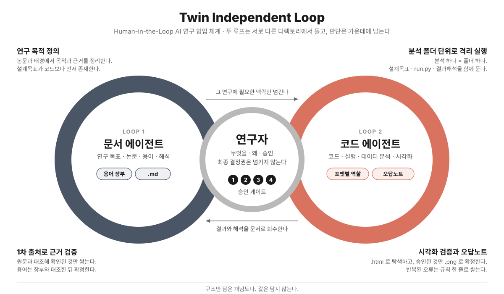

AI 활용 우수사례 · 연구
Twin Independent Loop
연구 포맷 가드레일 — 연구자가 주도권을 유지하는 AI 협업 체계
김한별
코드는 틀리면 멈추지만, 분석은 틀려도 숫자가 나온다. AI로 분석이 빨라질수록 조용히 틀린 채로 계속 가는 위험이 커진다. AI가 다음 단계까지 가버리고, 용어를 지어내고, 그림이 테스트를 통과한 채로 틀린다. 그래서 판단은 사람이 쥐고, 그 판단이 기록 · 재현 · 검증되도록 AI가 강제하게 만들었다.

두 루프가 따르는 네 가지 장치
01 · 포맷별 역할
파일 포맷을 결과가 아니라 지시로 쓴다
.md→
.svg→
.html→
.png
설명 · 구조 · 탐색 · 확정. ".html로 내"라는 한마디가 "아직 결론이 아니다"까지 전달한다. 거꾸로 가지 않는다 — 그림부터 만들면 해석이 그림에 맞춰 붙는다.
02 · 용어 장부
용어는 장부와 대조한 뒤 확정한다
AI 문서에서 가장 자주 틀리는 것은 숫자가 아니라 용어이고, 용어 오류는 검산이 안 된다. 장부에 없는 말은 AI가 정하지 않고 사람 앞에 올린다.
03 · 승인 게이트
사람이 승인해야 다음 단계로 간다
설계1실행2
시각화3확정4추적
설계목표 문서가 없으면 코드를 만들지 않는다. 한 번 시켰는데 세 단계가 돌면 갈렸어야 할 판단이 AI 기본값으로 지나간다. 게이트는 되돌리기 비싼 곳에만 넷 — 늘리면 전부 승인하게 되고, 게이트가 죽는다.
04 · 오답노트
오류 하나당 규칙 한 줄
- 무슨 일이
- "사건 없음" 음영 위에 사건 점이 찍혀 있었다
- 왜 안 걸렸나
- 음영과 데이터가 각각은 맞았다
- 규칙
- 배경 기준값은 그리는 데이터에서 뽑는다
- 검출
- 음영 ∩ 사건 = ∅ 를 자동 단언
시각화 오류 10종을 날짜와 함께 쌓았다. 핵심 칸은 "왜 안 걸렸나" — 그 칸이 다음 검사를 설계하는 자리다.
기록에 남은 것 2026.5 – 9 · 커밋 430
- 코드를 돌린 실험 폴더 79개 중 78개에 설계목표 문서 — 8월 이후 전부
- 색 오류: 단일 출처 상수 2줄을 고쳐 그림 10장을 다시 냈다
- 실험 98개 중 라이브러리 승격 11건 — 두 번 쓰인 것만 남긴다
- 그림 규칙 15개 · 용어 89개가 날짜와 사고 기록과 함께 쌓였다
어디로든 옮겨진다
- 표준 파일 포맷과 .md 규칙서뿐 — 새 도구 · DB 없음
- 시작은 두 가지: 설계목표 먼저, 장부 대조
- 도메인 내용을 뺀 골격을 공개 저장소로 배포
데모를 직접 조작해 보기
kimhanbyul2000.github.io/
ai-research-harness/demo/
ai-research-harness/demo/
github.com/KimHanbyul2000/ai-research-harness · MIT
포스터와 데모의 예시 값 · 용어는 전부 가상이다